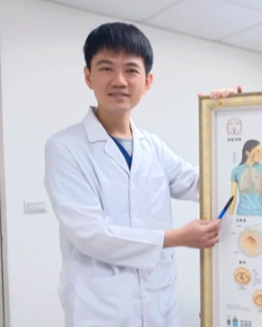

台南中西區・成功路・鄰近鴨母寮市場
成功成美診所府城巷子旁的健康照護者
一般內科・腸胃科・胸腔科。走進成功路，有人把您的不舒服聽清楚、說明白。
成功成美診所位於台南中西區成功路，鄰近鴨母寮市場，是成美診所體系的成功店。
我們是一間內科診所，常見的腸胃不適、胸腔與呼吸問題，以及高血壓、糖尿病、高血脂等日常健康，都可以先來聊聊。我們希望每一次看診，都把您的症狀、檢查與下一步說明清楚，讓您知道為什麼這樣做、接下來怎麼辦。
01一般內科
腹痛、腸胃炎、感冒、發燒、高血壓、糖尿病、高血脂，以及痛風、代謝症候群、肥胖等慢性病治療。
02腸胃科
胃腸、肝膽相關不適與慢性肝炎、B肝、C肝、脂肪肝追蹤及治療。
03胸腔科
慢性咳嗽、氣喘、COPD、肺阻塞、胸悶、肺功能評估。
需要進一步檢查或轉介時，我們會說明原因，讓您清楚下一步。
您不必先想「該掛哪一科」，來診所說說不舒服，我們幫您找到適合的方向。
陳炳諴 醫師
內科／腸胃肝膽科
專長
- 胃腸專科疾病、肝膽專科疾病
- 內科專科疾病
- 慢性病：高血壓、高血脂、糖尿病
學經歷
- 成大分院內視鏡室主任、超音波室主任
- 成大最佳服務主治醫師、成大最佳總醫師
- 奇美內科醫師、成大臨床教師
- 台南市醫師公會理事
- 台灣消化系內視鏡醫學會 副祕書長
- THICA 台灣肝炎資訊網關懷協會理事
- 發表論文於《新英格蘭醫學雜誌》（The New England Journal of Medicine）
- 糖尿病照護網醫師、慢性腎病變照護醫師、門診戒菸醫師
張峻愷 醫師
內科／腸胃肝膽科
專長
- 胃腸專科疾病、肝膽專科疾病
- 內科專科疾病
- 慢性病：高血壓、高血脂、糖尿病
學經歷
- 中山醫學大學醫學士
- 奇美醫學中心內科部住院醫師、總醫師
- 奇美醫學中心胃腸肝膽科總醫師、臨床研究員、備任主治醫師
- 臺東基督教醫院腸胃科主治醫師
- 中華民國肥胖研究學會肥胖症專科醫師、會員
- 臺南市糖尿病共同照護網認證合格
- 內科醫學會、消化系醫學會、內視鏡醫學會會員

高傳紘 醫師
內科／胸腔內科
專長
- 慢性咳嗽、喘、肺炎、肺結核、氣喘、肺阻塞
- 肺部腫瘤篩檢
- 胸部影像、肺功能判讀
- 腹部超音波檢查
- 一般內科疾病治療
- 高血壓、糖尿病、高血脂防治及治療
- 急重症醫學
學經歷
- 成功大學醫學系醫學士
- 成大醫院內科部住院醫師、胸腔科總醫師、兼任主治醫師
- 奇美醫院胸腔科主治醫師
- 新樓醫院加護重症醫學主治醫師
- 成大醫院最佳住院醫師、教學優良總醫師、內科臨床指導教師
- 內科專科醫師、胸腔暨重症專科醫師
- 糖尿病照護網認證照護醫師；台灣腎臟科醫學會認證慢性腎臟病照護醫師
- 衛福部核可戒菸治療醫師
- X 光檢查
- 肺功能檢查（PFT）、脈衝震盪肺功能（IOS）
- 抽血檢查
- 心電圖
- 超音波檢查
- 身體組成分析
- 內視鏡檢查（含胃鏡、大腸鏡）籌備中 開辦時另行公告
肺功能檢查需要較多時間，建議預留充裕時間並提早到診所。
門診時間（診所營業時段）
- 星期一至五上午 08:00–12:00
- 星期六、日休息
- 報到截止上午 11:30
各醫師的實際門診日，以診所公告為準。
掛號方式